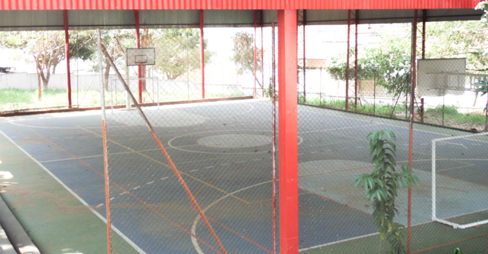
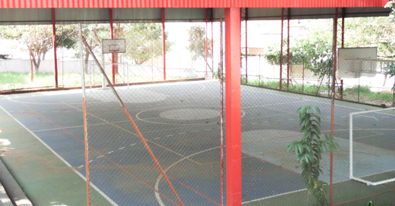

A Fatec Jales
A Fatec Jales é uma instituição de ensino superior tecnológico, iniciou suas atividades no segundo semestre de 2007. Seu primeiro curso superior oferecido foi Tecnologia em Agronegócio, contendo 80 vagas, divididas em períodos matutino e noturno e duração de 6 semestres. Em 2010, implantou-se o curso de Tecnologia em Sistemas para Internet, contendo 70 vagas semestrais, divididas nos períodos vespertino e noturno e duração de 6 semestres. Desde 2013, o curso de Sistemas para Internet é oferecido nos períodos matutino e noturno. No segundo semestre de 2014, o curdo de Tecnologia em Gestão Empresarial foi implantado, contendo 40 vagas semestrais, sendo apenas no período noturno. A partir de 2015, o curso passou a ser oferecido também à distância, contendo vagas semestrais. Os atuais cursos estão detalhados mais abaixo.
A instituição tem o objetivo de formar profissionais competentes que atuem de maneira eficaz e ética no mercado de trabalho e tragam propostas inovadoras para o mesmo. Sua visão é ser referência entre as instituições de Ensino Superior Tecnológico em suas áreas de atuação.
Fatec Jales se encontra instalada na Rua Vicente Leporace, n° 2630, Jardim Trianon e possui amplas instalações distribuídas em aproximadamente 10.000 m². Abaixo, encontram-se algumas fotos de sua infraestrutura:


 


Cursos oferecidos
Agronegócio
O profissional formado neste curso é apto a viabilizar soluções tecnológicas para o desenvolvimento de negócios na agropecuária, fazendo isso utilizando do domínio dos processos de gestão e cadeias produtivas do setor. Este está atento às novas tecnologias do setor rural, como também à qualidade e produtividade do negócio, define assim investimentos, insumos e serviços para a otimização da produção e o uso racional dos recursos. Pode atuar em empresas e organizações do Agronegócio e também em instituições de ensino e pesquisa. Saiba mais clicando aqui.
Análise e Desenvolvimento de Sistemas
O profissional formado neste curso é apto a analisar, projetar, implementar e coordenar infraestruturas de Tecnologia da Informação e Comunicação – TIC, visando atender às necessidades de mudanças de acordo com as inovações tecnológicas. Este curso enfatiza a engenharia de software, metodologias de construção de projetos, qualidade de softwares, integridade e segurança da informação, inteligência artificial, administração de banco de dados, hardware, rede de computadores, gestão de projetos de TI, consultoria tecnológica, desenvolvimento de sistemas e outras tecnologias do ramo. Saiba mais clicando aqui.
Gestão Empresarial
O profissional formado neste curso é apto a elaborar e implementar planos de negócios, usando de métodos e técnicas de gestão na formação e organização empresarial nos processos de comercialização, suprimento, armazenamento, movimentação de matérias e no gerenciamento de recursos financeiros e humanos. São trabalhas as habilidades de lidar com pessoas, comunicar, trabalhar em equipe, liderar, negociar, buscar informações, tomar decisões em contextos econômicos, políticos culturais e sociais distintos. Pode atuar tanto de modo mais generalizado, no âmbito nacional, como gestor, como também com competências específicas adaptadas às peculiaridades do estado ou região onde se encontrará. Saiba mais clicando aqui.
Este curso também é oferecido na modalidade à distância (EAD), saiba mais clicando aqui.
Sistemas para Internet
O profissional formado neste curso é apto a desenvolver programas, interfaces e aplicativos do comércio e do marketing eletrônico, como também sítios e portais para Internet e intranet. O mesmo gerencia projetos de sistemas, inclusive com acesso a banco de dados, pode desenvolver projetos de aplicações para a rede mundial de computadores, integrar mídias nos sítios da Internet, cuidar da implantação, atualização, manutenção e segurança dos sistemas que utilizam a Internet como plataforma, também atua com tecnologias emergentes, como: computação móvel, redes sem fio e sistemas distribuídos. Pode atuar como: analista de Sistemas, Web Designer, Gerente de Desenvolvimento de Software, Analista de Processo de Software, Programador de Sistemas Computacionais, Consultor em Tecnologia da Informação, Web Developer, Analista de SEO (Search Engine Optmization) e Gestor de Conteúdo, entre outras denominações da área de Tecnologia da Informação. Saiba mais clicando aqui.
Você pode saber mais sobre o primeiro semestre desse curso clicando aqui ou acessando "Matérias" no menu ao lado esquerdo.
Projetos da Fatec Jales
Click Melhor Idade
É um projeto de Inclusão Digital gratuito às pessoas com mais de cinquenta anos.
Fatecnologia
Coluna semanal que aborda temas e assuntos relacionados à tecnologia por entender a importância que esse tipo de informação tem no nosso mundo contemporâneo. Acesse os artigos clicando aqui.
Inova Paula Souza
Núcleo de Inovação Tecnológica do Centro Paula Souza. Saiba mais clicando aqui.
MuSEU Digital de Jales
Projeto que apresenta o acervo digital sobre a história de Jales. Visite o Museu clicando aqui.
ReAgro
Reagro é a revista eletrônica do Curso de Agronegócio. Acesse a revista clicando aqui.
Sintagro
É o Simpósio Nacional de Tecnologia em Agronegócio. Acesse o Sintagro 2016 clicando aqui.